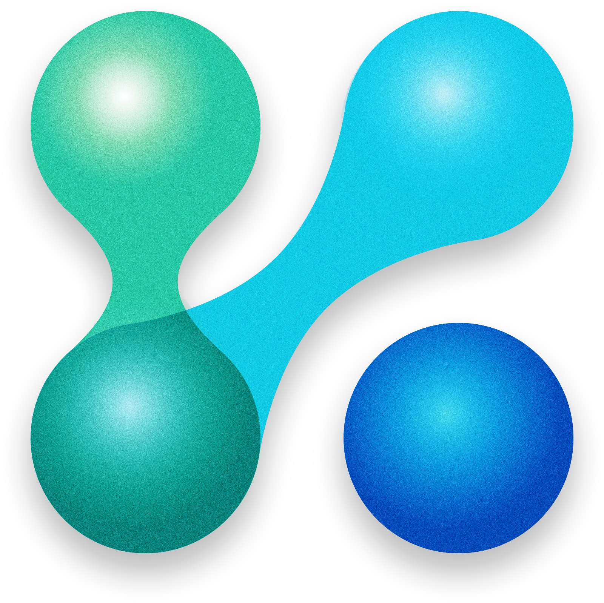
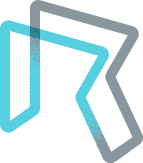
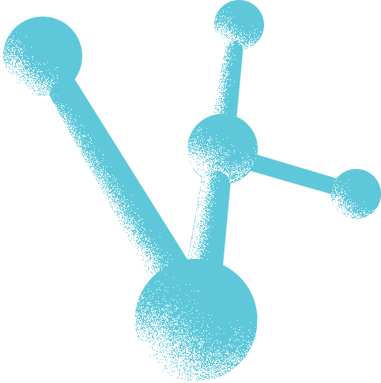
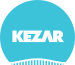
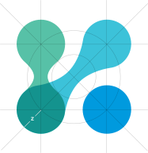
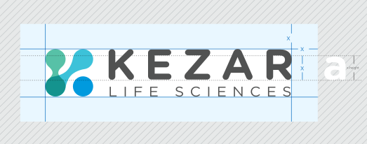
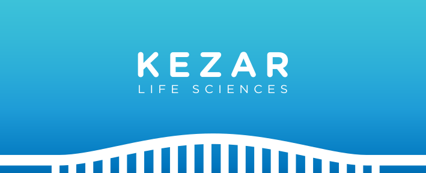

Logo work for a biopharmeceutical company developing a protein-targeting disease treatment.

The mark took inspiration from cellular forms and their amorphous nature. The subtle 'K' form can appear in the mark undetected which was intentional. I dislike when a logotype precedes itself with a mark that is the first letter of the name. The redundancy is a pet peeve of mine, but in this instance it works.



A collection of early prototype logo marks.

(Z) indicates overall proportions for the logotype and logomark. Height of (Z), the secondary logotype, is equal to the radius of each nodes within the logomark.
The relative sizing of the primary logotype versus the secondary is based on the modular scale of the major third (4:5) in order to retain visual harmony.
The logomark is divided into 3 transparent elements 2 of which overlap. The form mirrors the shape of the “K” in Kezar by way of gestalt.

Gray stripped area indicates Safe Zone. Other graphical and visual elements can be safely positioned up to the adjoining Blue area.
Blue indicates Clear Space. The blue area must be kept free of all other graphical and visual elements.
The minimum required Clear Space is defined by the measurement ‘X’ (equal to the height of the lowercase letters, known as the ‘x-height’. The width is equal to the height.)
The Color Palette
